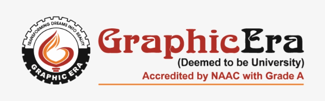

Department of Computer Science & Engineering (CSE)

Department Facilities
- Advanced Computer Labs with high-end systems
- High-Speed Internet and Wi-Fi connectivity
- Dedicated AI & ML Research Lab
- Well-equipped Programming Practice Lab
- Department Library with technical books & journals
- Industry Interaction & Guest Lectures
Semester-wise Subjects
- Semester 1
- Mathematics I
- Programming in C
- Physics
- Communication Skills
- Engineering Basics
- Semester 2
- Mathematics II
- Data Structures
- Digital Logic
- Environmental Studies
- Python Programming
- Semester 3
- OOP using C++
- Operating Systems
- Computer Networks
- DBMS
- Discrete Mathematics
- Semester 4
- Software Engineering
- Web Technologies
- Design & Analysis of Algorithms
- Microprocessors
- Probability & Statistics
Course Details
- Data Structures
-
Focuses on organizing data efficiently using arrays, stacks, queues,
and trees. Helps improve problem-solving and algorithm design skills.
- Operating Systems
-
Explains process management, memory management, and scheduling
concepts. Provides understanding of system resource handling.
- Database Management Systems
-
Covers relational databases, SQL, normalization, and transactions.
Essential for backend and data-driven applications.
- Artificial Intelligence
-
Introduces intelligent agents, search algorithms, and reasoning
techniques. Forms the base for advanced AI systems.
Subjects with Units
- Data Structures
- Unit 1: Arrays & Strings – basic data storage
- Unit 2: Linked Lists – dynamic structures
- Unit 3: Stacks & Queues – linear processing
- Unit 4: Trees & Graphs – hierarchical data
- Operating Systems
- Unit 1: OS Overview & Types
- Unit 2: Process & Thread Management
- Unit 3: Memory Management
- Unit 4: Deadlocks & Scheduling
- Database Management Systems
- Unit 1: Database Concepts
- Unit 2: SQL & Queries
- Unit 3: Normalization
- Unit 4: Transactions & Recovery
Department of Computer Science & Engineering